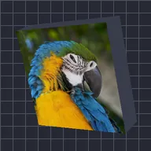

رستر اکسترود

تصویر لایه را به یک بلوک توپُر بیرون میکشد؛ کنارهها رنگ داخل را میگیرند.
تنظیمات
| تنظیم | نوع | بازه | پیشفرض |
|---|---|---|---|
| چرخش X | زاویه | -3600° تا 3600° | -20° |
| چرخش Y | زاویه | -3600° تا 3600° | -35° |
| چرخش Z | زاویه | -3600° تا 3600° | 0° |
| عمق | عدد | 0.005 تا 5 | 0.25 |
| رنگ داخلی | رنگ | – | #3D4152 |
| موقعیت | نقطه (X, Y) | -5000 px تا 5000 px | 0 px, 0 px |
| مقیاس | عدد | 0.05 تا 10 | 1 |
| پرسپکتیو | عدد | 0 تا 1 | 0.5 |
| سایهزنی | عدد | 0 تا 1 | 0.6 |
| زاویه نور | زاویه | -3600° تا 3600° | 135° |
| درخشش | عدد | 0 تا 1 | 0.3 |